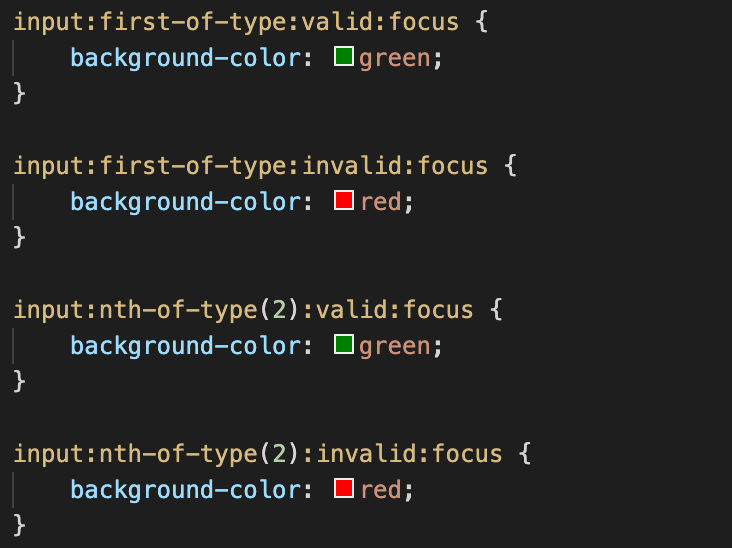
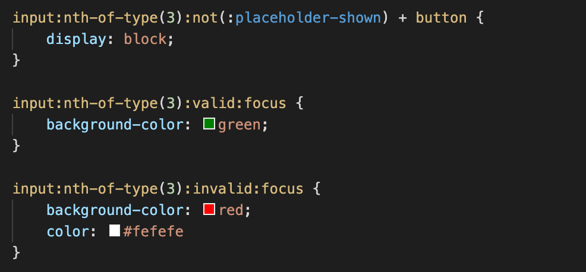
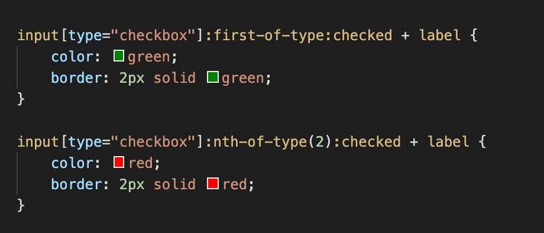
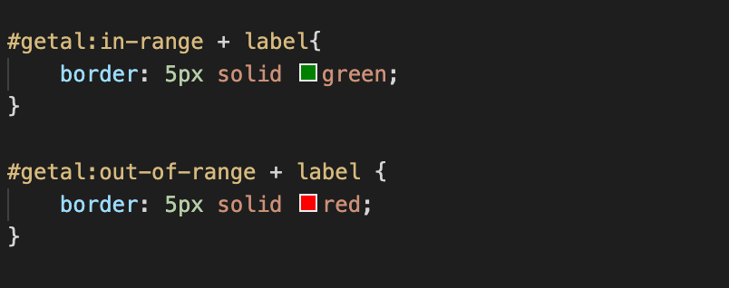

Deze code is gebruikt om feedback aan de gebruiker te geven of de waarde valid of
invalid is.

Deze code is gebruikt bij het kiezen van een stad.
Je kunt alleen zoeken wanneer er een waarde van minimaal drie karakters hebt
ingevuld.

Om feedback aan de gebruiker te geven maak je gebruik
van :checked en kan je hierdoor in de CSS feedback geven door middel van
kleur en feedback.
Vind je Alfa Romeo een mooi automerk?

Om feedback te geven of de waarde er binnen of buiten valt
gebruik je in-range of out-of-range en kan je door middel van CSS feedback
geven door middel van kleur of tekst.